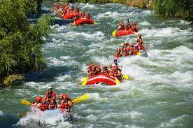
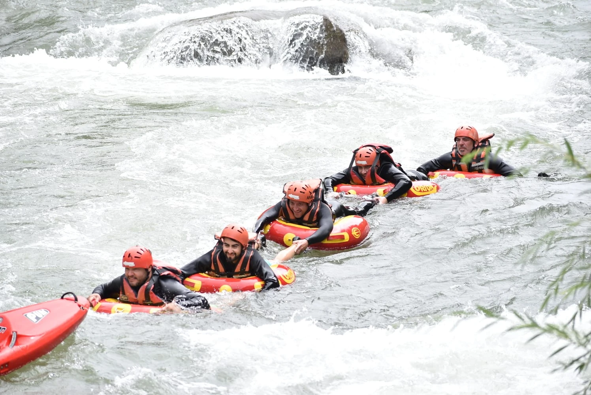
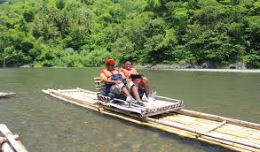

¿Listo para reservar tu aventura?
Contactanos hoy mismo y asegurá tu lugar en la balsa.
Contáctanos

Río Atuel Clásico
Ideal para familias y principiantes. Recorrido de 6 km con rápidos clase II y III, rodeado de paisajes increíbles. Duración: 1 hora y media.

Desafío Río Mendoza
Un viaje lleno de adrenalina por rápidos clase III y IV. Requiere experiencia previa. Duración: 2 horas. Incluye fotos y refrigerios.

Expedición Río Grande
Aventura completa de día entero. 18 km por rápidos clase III-IV, almuerzo incluido. Ideal para grupos, empresas o buscadores de emociones fuertes.
Resumen de nuestros viajes
| Viaje | Dificultad | Duración | Precio (ARS) | Edad mínima |
|---|---|---|---|---|
| Río Atuel Clásico | Fácil | 1.5 h | $8.500 | 8 años |
| Río Mendoza | Media | 2 h | $11.000 | 12 años |
| Río Grande Full Day | Alta | 6 h | $18.000 | 14 años |